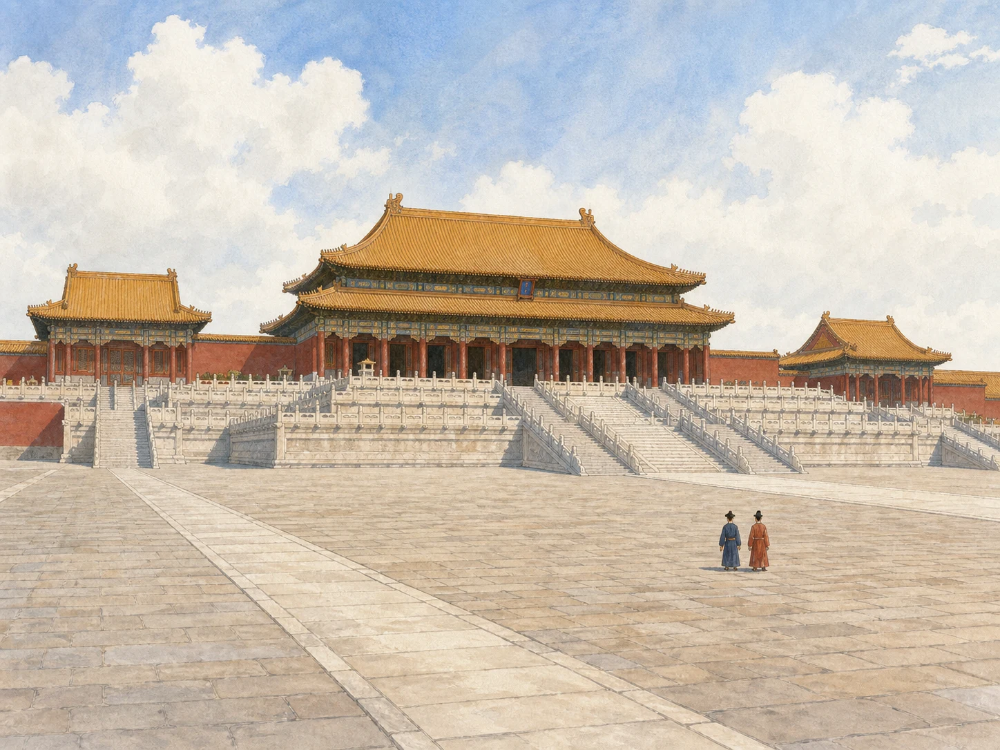
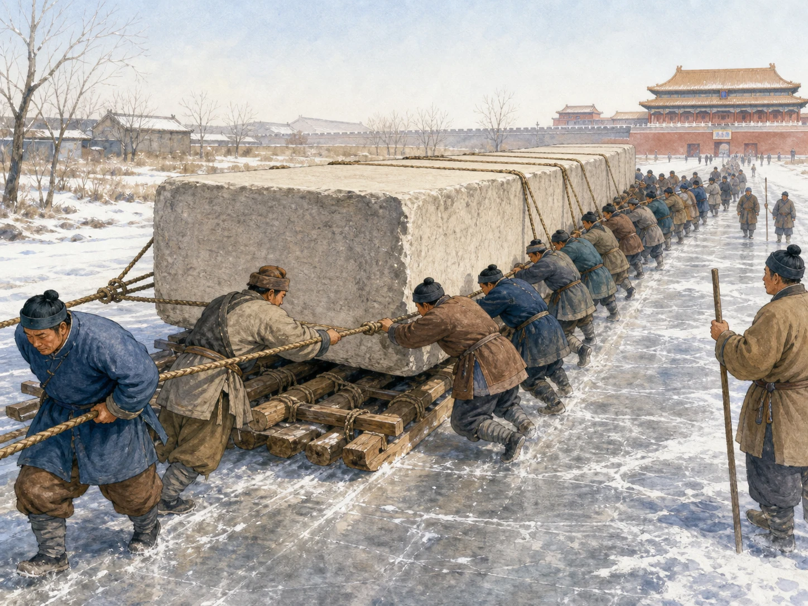
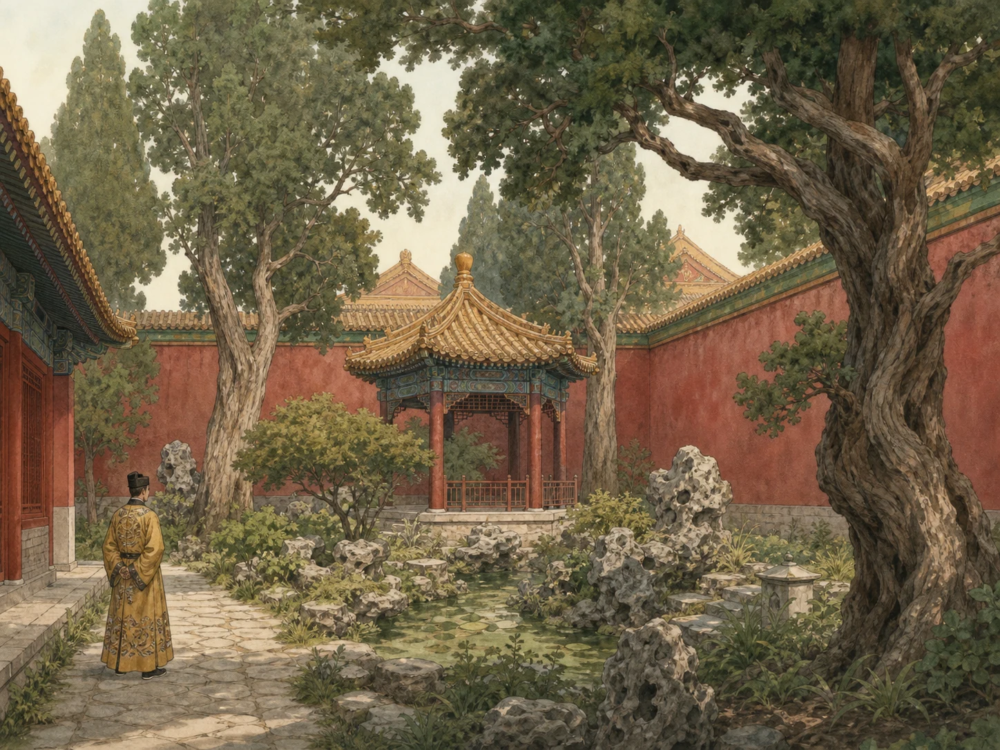

一座不断改变的城：从紫禁城到故宫博物院
A Palace That Kept Changing: From the Forbidden City to the Palace Museum
阅读难度 · 困难Reading level · Hard
Page 1
同一扇门，两套规则
One Gate, Two Sets of Rules

This is modern artwork, not an exact reconstruction. It shows the open, step-by-step ceremonial spaces along the palace's central axis.
今天走进北京故宫，你要预约、安检、验票。走过午门以后，路会带你穿过一座又一座门和院子。可是六百年前，问题完全不同：你是什么身份？今天有没有资格进这扇门？进来以后，能走哪一条路？
这个地方有三个容易混在一起的名字。“紫禁城”是明清皇宫的旧称；“故宫”的意思是从前的皇宫；“故宫博物院”则是1925年成立、今天负责保护宫殿和收藏的博物馆。它们指向同一片地方，却讲的是不同阶段。
故宫不是“一座大房子”。南北中轴线上，宫门、广场和大殿一层层展开；两边还有住宅、书房、庙宇、库房和花园。过去，建筑不只遮风挡雨，还会用距离、方向和门禁告诉人们：谁接近权力，谁必须停在外面。
To enter Beijing's Forbidden City today, visitors reserve a time, pass a security check, and scan a ticket. Beyond the Meridian Gate, one gate and courtyard lead to another. Six hundred years ago, the questions were very different: Who were you? Were you allowed through this gate today? Once inside, which path could you take?
Three names for this place are easy to mix up. The Forbidden City was the old imperial palace of the Ming and Qing dynasties. In Chinese, Gugong means “former palace.” The Palace Museum is the museum founded here in 1925 to care for the buildings and collections. The names point to the same place, but to different parts of its long life.
This was never just one giant house. Gates, squares, and halls unfold along a north-south line, with living quarters, studies, temples, storehouses, and gardens on both sides. The buildings did more than keep out wind and rain. Distance, direction, and guarded doors told people who could approach power - and who had to stop.
Page 2
1420年，时间没有停住
Time Did Not Stop in 1420
A time in China from 1368 to 1644.的永乐皇帝在1406年下令营建北京宫殿，工程在1420年完成。但是我们今天看见的故宫，不是一只从1420年原封不动保存下来的“时间盒子”。此后，明朝有十四位皇帝、China's last imperial dynasty, from 1644 to 1912.有十位皇帝在这里统治。火灾、雷击、修缮和新的宫廷需要，一次次改变建筑。
例如，坤宁宫在清初重建时采用了满族宫室的一些特点；太和殿在1679年遭雷击焚毁，准备材料十多年后，于1697年重建完成。今天的宫殿群因此像一本反复装订的大书：大体格局延续下来，每一代又留下改建和使用的痕迹。
故宫博物院介绍，现存建筑有九百八十多座，房屋八千七百多间。这里的“间”是用柱子划分的建筑开间，不等于八千七百多间卧室。你也许听过“九千九百九十九间半”的故事，但那是流行传说，不是现代测量结果。说故宫“最大”时也要讲清标准：它通常被称为世界上现存规模最大、保存最完整的木结构宫殿建筑群，而不是在任何一种排名中都必定最大的“房子”。
The Yongle emperor of the A time in China from 1368 to 1644. ordered work on a new Beijing palace in 1406, and the main project was completed in 1420. Yet the Forbidden City we see now is not a time capsule left untouched from that year. Fourteen Ming emperors and ten China's last imperial dynasty, from 1644 to 1912. emperors ruled from here. Fires, lightning, repairs, and changing court needs altered the buildings again and again.
For example, the Palace of Earthly Tranquility was rebuilt early in the Qing dynasty with features connected to Manchu palace life. The Hall of Supreme Harmony burned after a lightning strike in 1679. Preparing materials took more than ten years, and the rebuilt hall was finished in 1697. The palace is like a very old book that has been repaired and rebound many times: its broad plan survived, but different generations left marks on it.
The Palace Museum counts more than 980 surviving buildings and more than 8,700 jian. A jian is a bay - the space marked out by a building's columns - not the same thing as a bedroom. You may hear the story that the palace has “9,999 and a half rooms,” but that is a popular legend, not a modern survey. Even the word largest needs care. The Forbidden City is widely described as the world's largest and best-preserved wooden palace complex, not as the biggest “house” under every possible way of measuring.
Page 3
1557年，一块石头走冰路
In 1557, a Stone Traveled on Ice

A modern artist imagines workers hauling stone on a wooden sledge. Records support the method, but they do not preserve this crew's faces, clothes, or exact scene.
没有卡车，怎样把一块比许多大象加起来还重的石头，从北京西南的采石场运进宫城？一份古代记录给研究者留下了线索。1557年，一块约123吨的石料从大石窝一带出发，在二十八天里走了大约七十公里。
工人把石头放在木橇上，利用冬天的冰路拖行。路边每隔大约半公里挖井取水，再把水浇到冰面上。薄薄的水层能减小木橇和冰之间的摩擦。现代工程学计算表明，这样比在干土上硬拉省力得多。这里最精彩的不是“古人不用轮子”，而是他们知道：对一块极重、又不能摔裂的石料，慢而平稳的冰道可能比颠簸的车更可靠。
不过，这份详细记录来自1557年，比故宫最初建成晚了一百多年。它证明的是十五、十六世纪宫殿工程使用过冰道运巨石，不能拿来复原1420年某一天的工地。画面里有多少人、他们怎样喊号子、天气是什么样，史料都没有告诉我们。真正可以确定的是：皇帝下令，并不会让宫殿自己出现。采石、运料、木作、烧瓦、彩画和长期维修，都靠许多工匠与劳工完成。
Without trucks, how could builders move a stone heavier than a whole herd of elephants from a quarry southwest of Beijing into the palace? One old record gives researchers an answer. In 1557, a stone weighing about 123 metric tons traveled roughly 43 miles (70 kilometers) from the Dashiwo quarry area. The trip took 28 days.
Workers placed the stone on a wooden sledge and pulled it along a winter ice road. Wells about a third of a mile apart supplied water to pour over the ice. That thin layer of water reduced friction between the wooden runners and the road. Modern engineering calculations show that this took far less pulling force than dragging the load across dry ground. The clever part was not that the workers had forgotten about wheels. For a stone that was extremely heavy and too valuable to crack, a slow, smooth ice road could be safer than a rough cart ride.
There is an important catch: this detailed record comes from 1557, more than a century after the main palace was finished. It shows that builders used ice roads for palace stones in the 1400s and 1500s. It does not recreate one day at the 1420 worksite. The record does not tell us exactly what every worker wore, shouted, or felt. What we do know is that an emperor's command could not make a palace rise by itself. Quarry workers, haulers, carpenters, tile makers, painters, and repair crews made and maintained it.
Page 4
大广场为什么这么空？
Why Do the Great Courtyards Feel So Empty?
穿过午门和太和门，开阔的院落会把人的目光引向中轴线上的大殿。外朝以太和殿、中和殿、保和殿为中心，是举行重大国家典礼的重要区域。层层递进的门、院和高台，让队伍有地方排列，也让仪式有清楚的方向和次序。
这些主要仪式院落确实几乎没有树，和御花园、住宅院落里的古树很不一样。网上常说，这是为了不让刺客藏身，或者纯粹为了防火。木建筑怕火是真的，故宫历史上也发生过许多火灾；可是目前可靠的故宫资料和建筑研究并没有把“防刺客”证明为不种树的设计原因。我们能从空间本身看见的是开阔、对称、交通和仪式秩序，不必用一个刺激的传说替它作唯一解释。
这也提醒我们：建筑会制造感觉，但感觉不是证据。站在宽阔院子里，也许会觉得自己很小；这可以帮助我们理解皇宫怎样表现等级和权力。可是如果进一步说“每一块砖都故意让人害怕”，就把复杂的建筑历史猜成了设计师没有留下的心里话。
Beyond the Meridian Gate and the Gate of Supreme Harmony, enormous courtyards draw the eye toward the halls on the central line. The Outer Court centers on the Halls of Supreme Harmony, Central Harmony, and Preserving Harmony. It was an important setting for major state ceremonies. Its sequence of gates, courts, and raised platforms gave processions room to form and ceremonies a clear order.
These main ceremonial courtyards are indeed almost treeless. They look very different from the old trees of the Imperial Garden and some residential courtyards. Online explanations often claim that trees were banned so assassins could not hide, or simply to prevent fires. Fire was a real danger in a wooden palace, and the Forbidden City suffered many fires. However, reliable Palace Museum sources and architectural studies do not establish the assassin story as the reason for the treeless design. What the space itself clearly shows is openness, symmetry, movement, and ceremonial order. We do not need one exciting legend to explain it all.
Architecture can create a feeling, but a feeling is not evidence. In such a wide courtyard, you may feel tiny. That helps us notice how the palace displayed rank and power. But saying that “every brick was designed to frighten people” would turn a complicated history into a guess about thoughts the designers never recorded.
Page 5
门在管理人，不是在锁住一个人
The Gates Organized People; They Did Not Cage One Person

This modern picture uses a garden to contrast palace life with the world outside. It is not a map of the Imperial Garden or evidence of one emperor's lonely walk.
故宫常被简单分成“前朝”和“内廷”。外朝主要用于大典等国家活动；内廷有帝后居住、处理事务和举行内廷礼仪的空间。不过，这不是“前面只办公、后面只睡觉”的硬分界。宫殿用途会随朝代和皇帝改变，内廷也会处理政务，外朝建筑也不只做一件事。
宫门真正严格管理的是许多人的通行。皇帝、后妃、皇子、官员、侍卫、太监、宫女和工匠，身份不同，能进入的区域、时辰和路线也不同。午门中间的门洞通常供皇帝使用，只有少数特殊仪式允许其他人通过。建筑把宫廷社会的等级变成了一条条看得见、走得过或走不过的路线。
过去的皇帝当然受到礼仪、安全和随从制度的约束，但说他们“只能从寝宫走到御花园”并不准确。清代帝后会从西华门前往西苑和北京西郊的皇家园林，皇帝也有出巡、祭祀和狩猎等宫外活动。富丽的宫墙既能保护，也能限制；可是把故宫说成一座简单的“金色牢笼”，会漏掉皇帝能够调动的巨大权力，也会把不同时代、不同人的生活压成同一个故事。
The Forbidden City is often divided into the Outer Court and Inner Court. The Outer Court was used especially for great ceremonies and affairs of state. The Inner Court included living spaces and places for work and family rituals. But this was not a hard rule meaning “work only in front, sleep only in back.” Rooms changed uses over time. Government business also happened in the Inner Court, and an Outer Court building could serve more than one purpose.
The gates mainly controlled the movement of many different people. Emperors, royal family members, officials, guards, eunuchs, palace women, and craftspeople had different rules about where, when, and how they could enter. The central opening of the Meridian Gate was normally reserved for the emperor, with only a few ceremonial exceptions. The palace turned rank into routes that people could - or could not - walk.
Emperors were surrounded by rules, guards, and attendants, but it is not accurate to say they could walk only from their rooms to the Imperial Garden. Qing rulers and royal family members used the western gate when traveling to nearby imperial parks. Emperors also left for tours, rituals, and hunts. Palace walls could protect and limit, but calling the Forbidden City a simple “golden cage” leaves out the enormous power an emperor held. It also squeezes many rulers and many centuries into one easy story.
Page 6
皇宫怎样变成博物馆？
How Did a Palace Become a Museum?
1912年，清朝皇帝退位，帝制结束，但宫门没有在同一天立刻变成博物馆大门。根据当时的优待条件，溥仪和家人仍住在内廷；1914年，外朝的一部分先成立了古物陈列所。直到1924年，溥仪离开宫城，工作人员才得以清点内廷留下的物品。
1925年10月10日，故宫博物院成立。这个变化也不是把“皇帝的家”简单搬空，再让游客进来拍照。宫殿本身成为需要保护的文物；绘画、书法、器物、档案和宫廷生活留下的物件，也需要整理、研究、展览，有些还在战争中被转移保护。
所以，“大家都能走进故宫”表达的是一个重要方向，却不是说每一座宫殿、每一个库房都随时开放。今天的参观路线还要照顾文物安全、建筑承受力和修缮工作。曾经用门来区分身份的皇宫，变成了为公众保存历史的博物馆；门仍然有规则，但规则的目的已经改变。
In 1912, the Qing emperor gave up the throne and imperial rule ended. The palace gates did not become museum doors that same day. Under an agreement with the new government, Puyi and his household continued to live in the Inner Court. In 1914, part of the Outer Court became an early museum called the Antiquities Exhibition Office. Puyi left the palace in 1924, and workers then began cataloging the objects remaining in the Inner Court.
The Palace Museum opened on October 10, 1925. This change was not as simple as emptying the emperor's home and inviting people in to take pictures. The palace buildings became treasures that needed protection. Paintings, calligraphy, objects, records, and traces of court life had to be counted, studied, displayed, and sometimes moved to safety during war.
Today we often say that the Forbidden City is open to everyone. That describes an important change, but it does not mean every hall and storehouse is always open. Visitor routes must also protect fragile buildings and collections while repairs continue. A palace whose gates once separated people by rank became a museum that preserves history for the public. The gates still have rules, but the purpose of those rules has changed.
再走一次午门
Walk Through the Meridian Gate Again
现在再想象你站在午门前。验票之后，你走进的不是一座六百年从未改变的巨大房子，而是一片经过建造、焚毁、重修、改用和保护的历史现场。
抬头看大殿时，别只问：“皇帝住得多豪华？”还可以问：“哪些门把人分开？哪些工匠让石头和木头来到这里？哪些部分是明代留下的，哪些经过清代重建？一个皇宫又怎样变成博物馆？”
故宫真正的大，不只在面积和房屋数量。它的大，还在于六百年里许多人的劳动、权力、生活与选择，都在同一片宫墙内留下了不同的层次。
Now imagine standing at the Meridian Gate once more. After your ticket is scanned, you are not entering one giant house that stayed unchanged for six hundred years. You are entering a place that was built, burned, rebuilt, reused, and protected.
As you look up at the halls, do not ask only, “How grand was the emperor's home?” Ask more: Which gates separated people? Whose labor brought the wood and stone here? Which parts came from the Ming period, and which were rebuilt under the Qing? How did an imperial palace become a public museum?
The Forbidden City is enormous, but its size is not only about land or room counts. Many layers of labor, power, daily life, and choice have gathered inside the same walls for more than six centuries.